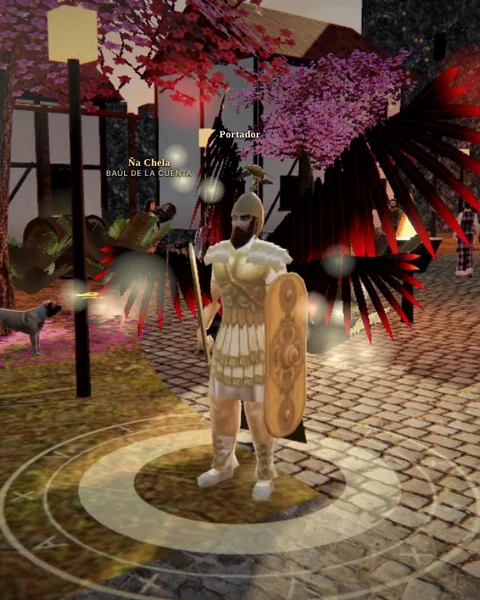
Caballero
Evoluciona a Caballero de TauEspada y escudo. Mucha vida y gran daño cuerpo a cuerpo.
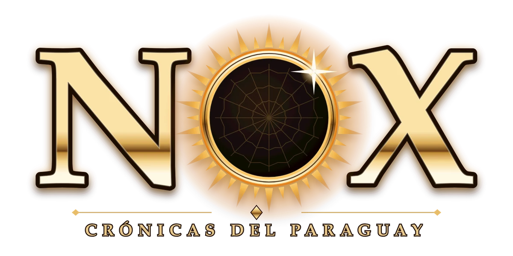
Cuando cae la noche, nacen las leyendas.
Tau se llevó a Kerana y de esa unión nacieron siete hijos malditos. Elegí tu clase, cruzá diez tierras del reino y abrí otra vez el camino a Yvy Marane'ỹ, la Tierra Sin Mal.
Hubo un tiempo en que el reino del Paraguay vivía bajo la luz de Kuarahy, el sol. Los pueblos caminaban hacia el poniente buscando Yvy Marane'ỹ, la Tierra Sin Mal, donde nadie enferma y nadie muere.
Eso se terminó la noche en que Tau, el espíritu del mal, se llevó a Kerana, la hija más hermosa de la tierra colorada. Cuando nació el séptimo de sus hijos, el sol siguió saliendo pero ya no alumbraba igual. Los escribas de Asunción anotaron lo que pasó con una sola palabra: NOX, la noche.
Asunción resiste detrás de sus murallas. Afuera esperan los hijos de Tau, cada uno en su tierra. En la catedral, el Pa'i Antonio guarda una profecía.
«Cuando caigan los siete hijos, la luz de Kuarahy va a volver a entrar en la tierra, y se va a abrir otra vez el camino a Yvy Marane'ỹ.»
Los libros llaman portadores a los que caminan con luz propia en medio de la noche. Vos sos uno de ellos.
Los doce capítulos que el cronista va escribiendo a medida que avanzás. En el juego, cada uno se abre cuando cumplís su hazaña.
Cada clase evoluciona con la prueba del Pa'i Antonio y tiene sus propios sets, armas y alas.

Espada y escudo. Mucha vida y gran daño cuerpo a cuerpo.
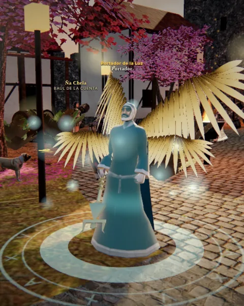
Fuego y espíritus del monte. Daño mágico a distancia.
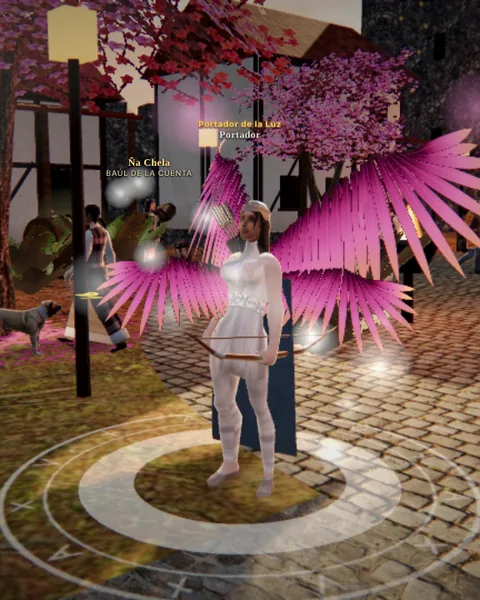
Tiradora ágil del monte. Ataca de lejos y se cura sola.
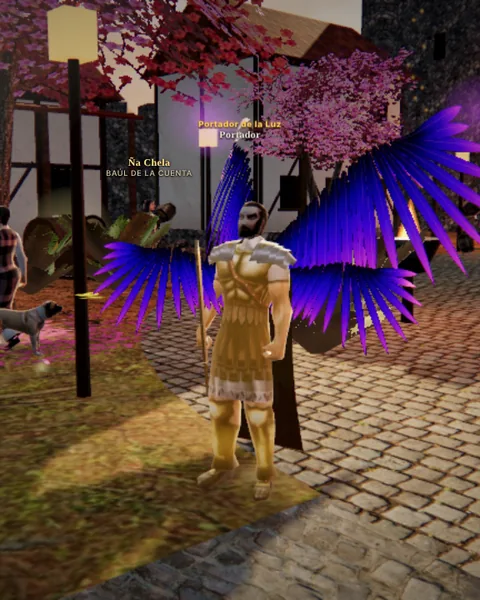
Espada y magia a la vez. Pelea sin casco y lanza rayos con la espada.
Con un personaje nivel 40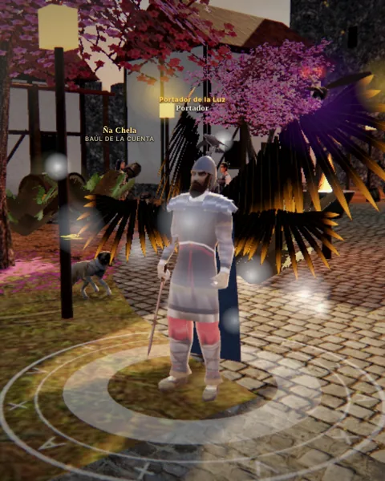
Señor de guerra guaraní. Cetro, capa y el cuervo Guyra Hũ, que caza por él.
Con un personaje nivel 50Cada tierra tiene sus bestias, sus jefes y sus misiones. Los portales se abren a medida que subís de nivel.
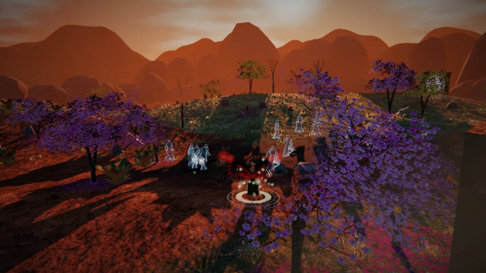
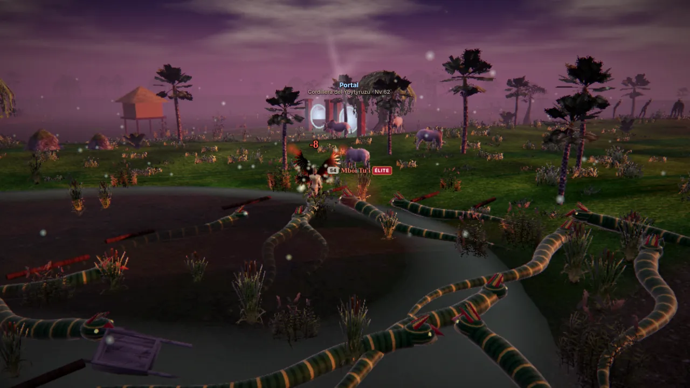
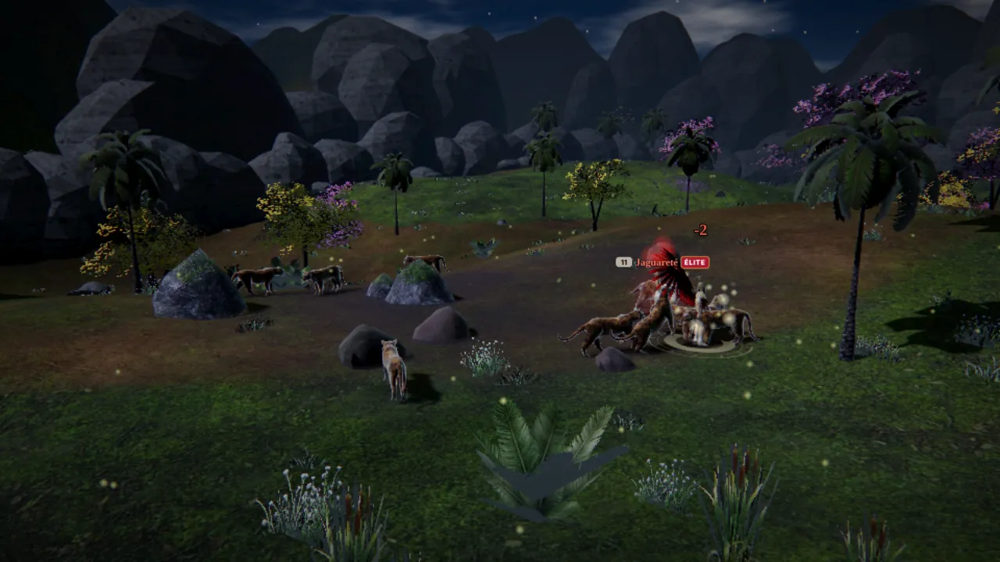
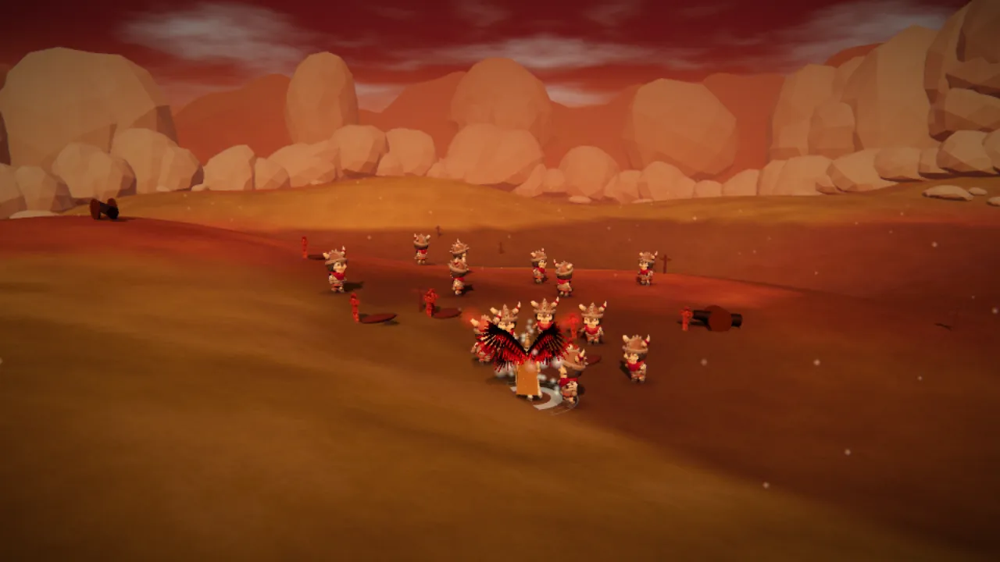
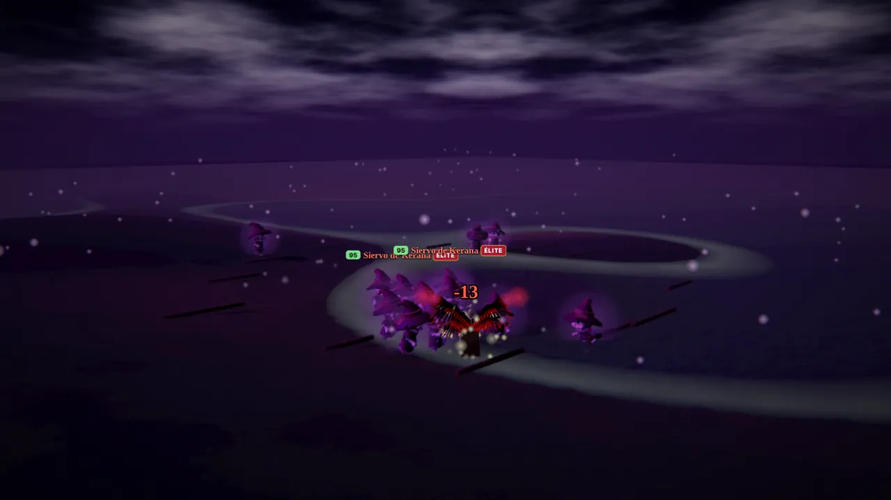
Cada clase tiene siete sets, siete armas y cuatro etapas de alas, cada una con su propio color y brillo. De lejos ya se ve quién llegó más alto.
Cuatro etapas por clase, de las Alas de Guyra Pytã del Caballero a la Capa de Guyra Hũ del Mburuvicha. En el Caldero de Kerana se forjan las de segunda generación, con un segundo par.
El reino tiene su propio reloj. De noche salen las luciérnagas y las bestias dan 15% más de experiencia.
Tu personaje caza solo y usa las habilidades de su clase en el orden justo, mientras vos mirás el inventario.
La Arena de Añá y la Fortaleza de Tuguy abren cada tanto con recompensas que no se consiguen cazando.
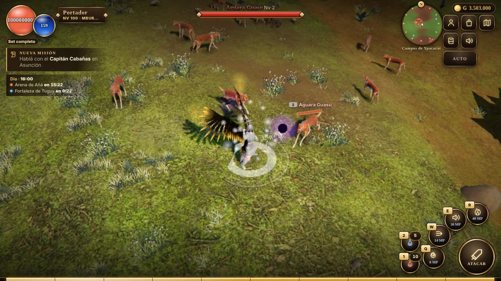